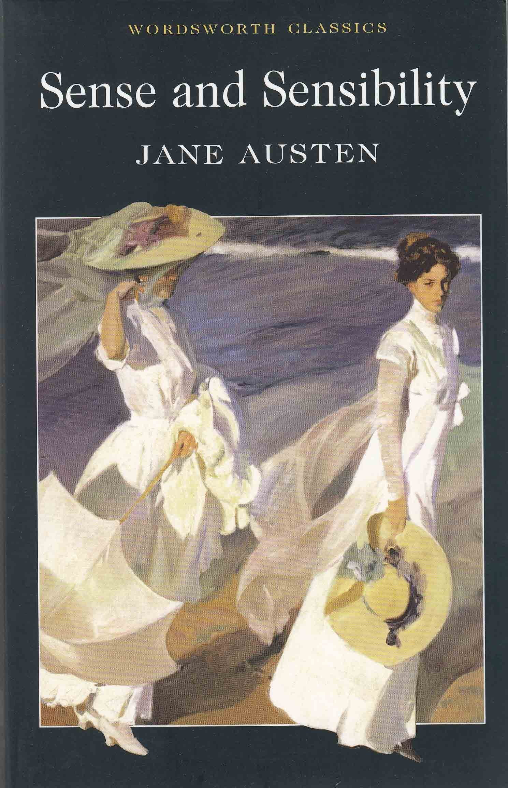

Sense and Sensibility

Író: Jane AustenKiadás:1811
Jane Austen másik remekműve, a "Sense and Sensibility," két testvér, Elinor és Marianne Dashwood történetét meséli el, akik eltérően közelítik meg az érzelmeket és az életüket. A regény humorral és éles társadalomkritikával ábrázolja az angol társadalom szokásait.
Jane Austen

Foglalkozása: Író Született:1775-1817
Jane Austen angol írónő, aki az angol regény egyik legkiemelkedőbb alakja, és a romantika korszakának kiemelkedő írója. Művei a társadalmi élet és a szerelem kifinomult ábrázolásáról ismertek, és ma is rendkívül népszerűek a világon.